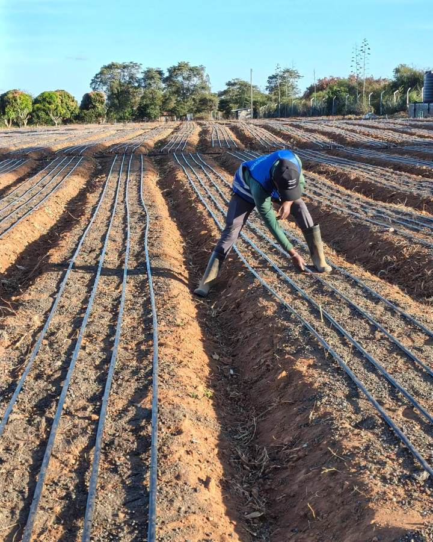

Grow more from the land you already farm.
Rehoboth Solutions Limited is an agricultural consultancy. We combine field sensors, satellite data and agronomy to help farms cut water, fertiliser and fuel costs while raising yield.
Book a farm assessmentHow we farm
Food for Nigerian kitchens
We grow the everyday foods that households buy every week, to help support food security across Nigeria.
- Tomatoes
- Chilli
- Habanero pepper
- Bell pepper
- Watermelon
- Pawpaw
- Cassava
- Sweet potatoes
- Palm nuts
And more, as we bring the rest of our land into production.
What we help farms do
Practical advice, backed by your own field data.
Precision irrigation
Soil moisture sensors and weather data tell you when and how much to water, field by field.
Soil and nutrient planning
Soil sampling and zone maps for variable-rate fertiliser, so you spend only where crops respond.
Crop monitoring
Satellite and drone imagery flag stress, pests and disease early enough to act.
Farm technology setup
We choose, install and train your team on sensors, software and equipment that fit your budget.
How an engagement works
- SurveyWe walk the farm and review your records, soil and yields.
- InstrumentWe place sensors and set up data feeds where they matter most.
- AnalyseOne growing season of data shows what is working and what is wasted.
- AdviseYou get a clear plan with costs, savings and next steps.